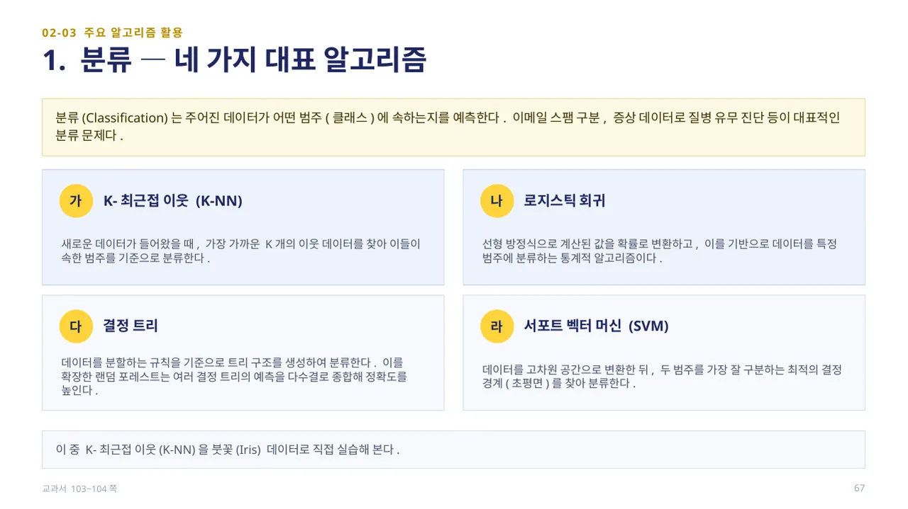
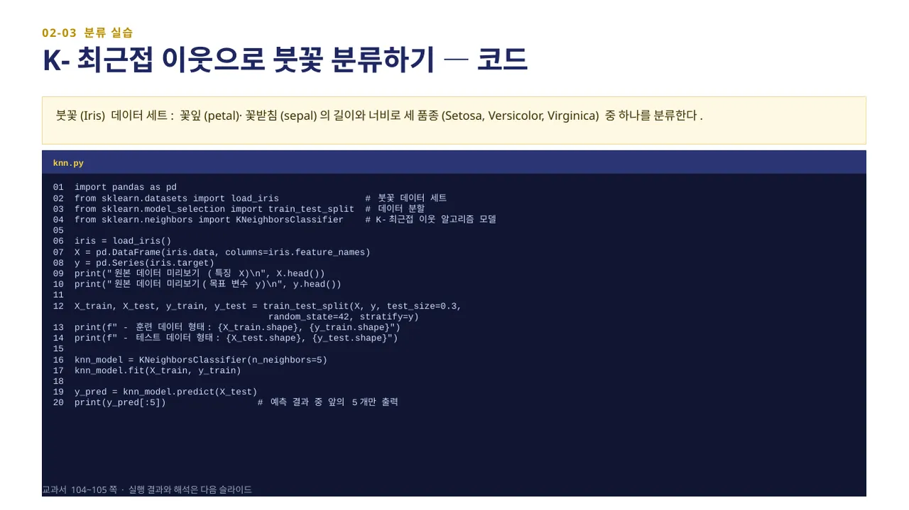
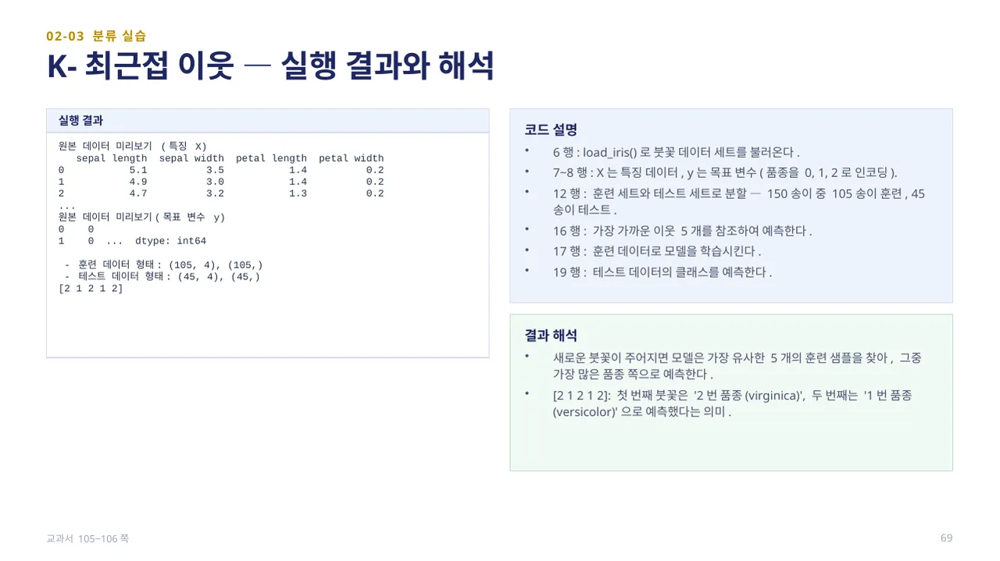
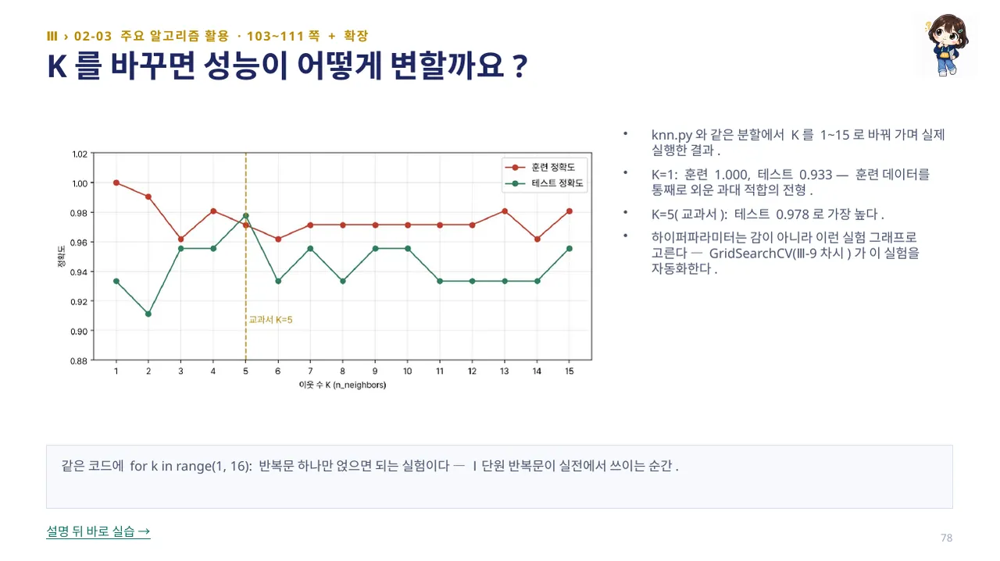
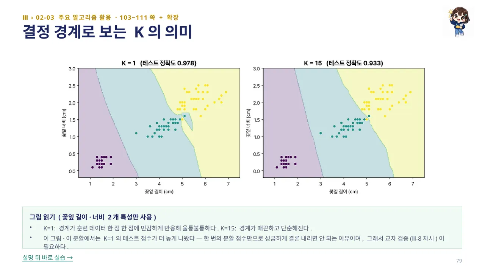

인공지능 파이썬 실무
인공지능 파이썬 실무대단원 Ⅲ. 파이썬과 머신러닝 교과서 60–131쪽
중단원 02. 머신러닝 라이브러리 활용 · 85–128쪽
소단원 03. 주요 머신러닝 알고리즘 활용 · 103–111쪽
이 웹 주제의 연계 범위: 103–105쪽
교과서 103–105쪽
주요 알고리즘 활용 · 분류
이름에 회귀가 들어 있어도 범주를 예측하는 모델이 있어요.





직접 해 보세요
- k를 3과 7로 바꾸고 같은 분할에서 결과를 비교하세요.
이 설명으로 해 보는 실습
예제마다 페이지가 따로 있습니다. 카드를 누르면 설명과 코드가 함께 열립니다.
교과서 104~105쪽 knn.py — K-최근접 이웃으로 붓꽃 분류
전체 scikit-learn 모델은 PC에서 실행합니다. 브라우저에서는 연결된 원리 실습으로 입력·계산·결과
따라 하기 · knn.py에서 K를 1, 5, 15로 바꿔 보기
104쪽 knn.py와 같은 분할(test_size=0.3, random_state=42, stratify=y)에서 K=1로 K-최근접 이웃을 학습시키고 훈련·테스트 정확도를 출력하세요.
from sklearn.datasets import load_iris from sklearn.model_selection import train_test_split from sklearn.neighbors import KNeighborsClassifier from sklearn.metrics import accuracy_score X, y = load_iris(return_X_y=True) X_train, X_test, y_train, y_test = train_test_split( X, y, test_size=0.3, random_state=42, stratify=y) model = KNeighborsClassifier(n_neighbors=1) model.fit(X_train, y_train) print('훈련 정확도:', round(accuracy_score(y_train, model.predict(X_train)), 3)) print('테스트 정확도:', round(accuracy_score(y_test, model.predict(X_test)), 3))확인: 훈련 정확도: 1.0 / 테스트 정확도: 0.933 — 훈련 데이터를 통째로 외운 과대 적합의 모습입니다.
같은 코드에서 n_neighbors만 5로 바꿔 다시 실행하세요(교과서 기본값).
model = KNeighborsClassifier(n_neighbors=5) model.fit(X_train, y_train) print('훈련 정확도:', round(accuracy_score(y_train, model.predict(X_train)), 3)) print('테스트 정확도:', round(accuracy_score(y_test, model.predict(X_test)), 3))확인: 훈련 정확도: 0.971 / 테스트 정확도: 0.978 — 이 실험에서 가장 높은 테스트 정확도입니다.
n_neighbors를 15로 바꿔 다시 실행하고, K가 커질수록 결정 경계가 어떻게 달라지는지(79쪽) 한 문장으로 설명하세요.
model = KNeighborsClassifier(n_neighbors=15) model.fit(X_train, y_train) print('훈련 정확도:', round(accuracy_score(y_train, model.predict(X_train)), 3)) print('테스트 정확도:', round(accuracy_score(y_test, model.predict(X_test)), 3))확인: 훈련 정확도: 0.981 / 테스트 정확도: 0.956 — K=1보다 훈련 정확도는 오르지만 테스트 정확도는 오히려 낮습니다.
PRACTICE / RETRY / UNDERSTAND
연습 문제
PRACTICE이 소단원 문제 4개 풀기 →
설명·힌트·정답과 함께 스스로 채점합니다.
LEARNING JOURNAL